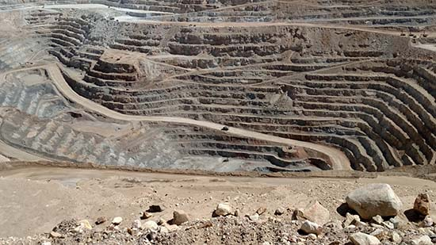
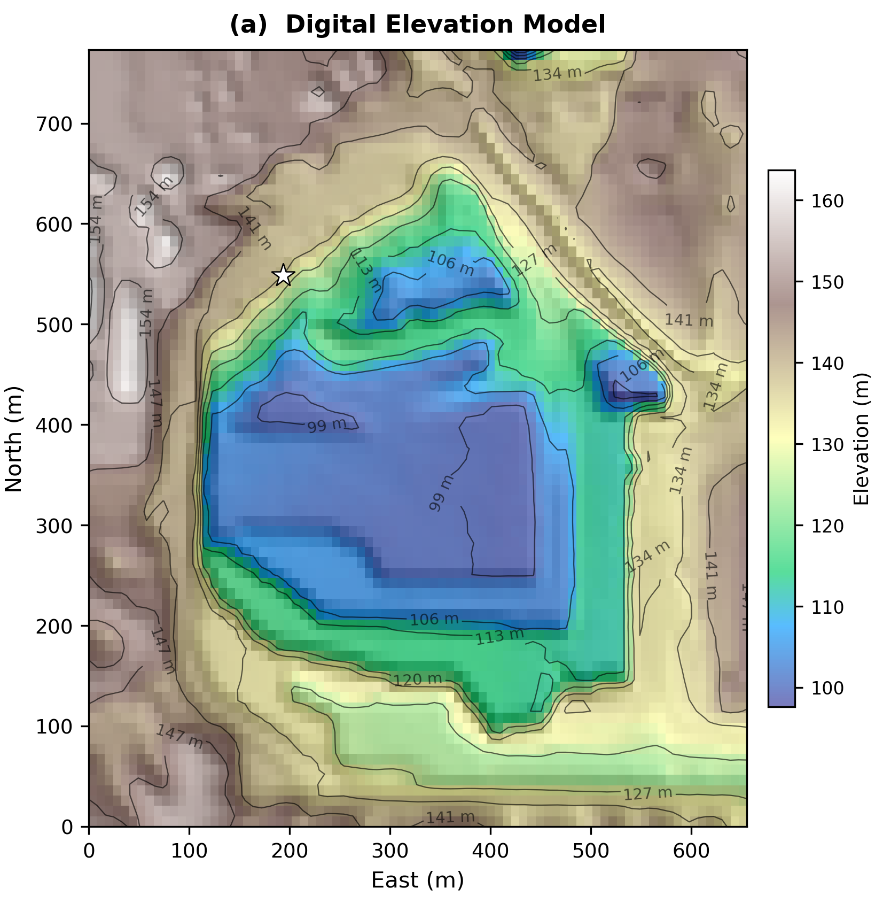
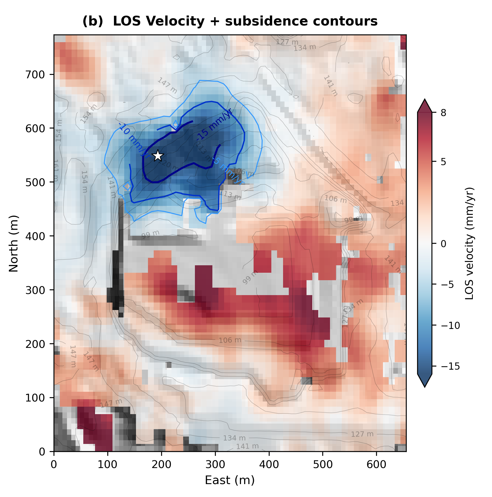
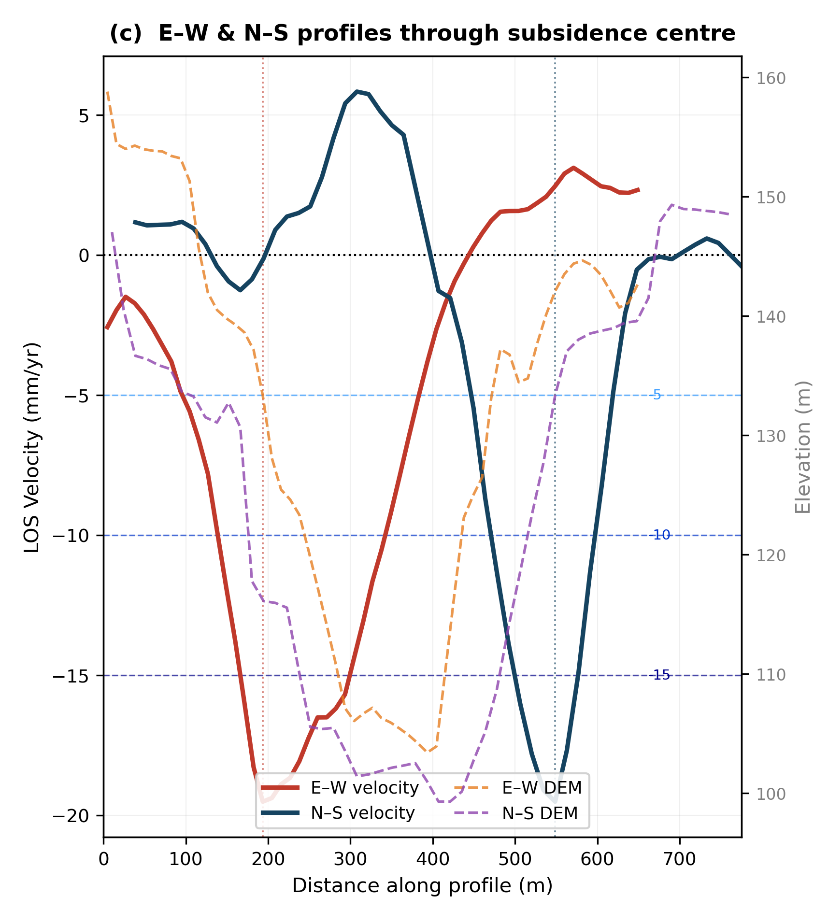

Mapping ground deformation around open-pit / underground extraction with an eight-year Sentinel-1 ascending stack.
An eight-year Sentinel-1 ascending stack resolves a well-defined subsidence bowl centred on the extraction footprint, peaking at roughly −18 mm/yr in line-of-sight, with the deformation gradient tracking elevation change in the pit and spoil areas.
Extraction, whether by open-pit excavation, underground longwall mining, or dewatering of the surrounding aquifer, redistributes stress in the rock and soil mass well beyond the immediate footprint of the operation. The surface response is subsidence: slow, often broad, and not always confined to where digging is actually happening.
That matters for three practical reasons. Unmonitored subsidence can damage haul roads, conveyors, tailings infrastructure and nearby buildings; it can change drainage and create unexpected flooding or ponding; and in active or closed pits it is one of the clearest early indicators of slope or void instability, making it a safety question, not just an engineering one. Ground crews can survey individual benchmarks, but they cannot see the whole deformation field continuously, especially across rugged or restricted-access terrain.
Interferometric SAR turns repeat satellite passes into a spatially continuous map of line-of-sight ground velocity across the entire mine footprint and its surroundings, at a resolution and areal coverage no GPS or survey network can match for the same cost. Differencing phase between acquisitions isolates millimetre-scale motion between passes; stacking many pairs over years separates the steady subsidence trend from noise, atmosphere, and orbital error.
For this site, an ascending Sentinel-1 stack in VV polarization spanning 2015–2023 was processed into a multi-temporal LOS velocity field referenced to a stable area outside the influence zone. The DEM context below shows the topographic setting the deformation is overlaid on, where the lowest elevations in the worked-out pit area correspond closely to the fastest-subsiding ground.


Taking displacement profiles across the site along orthogonal transects ties the surface signal directly to topography: velocity drops fastest where the ground itself drops into the pit, and flattens out toward the margins where elevation stabilises. That spatial correlation, rather than a uniform basin-wide trend, is what points to extraction and associated dewatering or void collapse as the proximate cause rather than a regional process.
